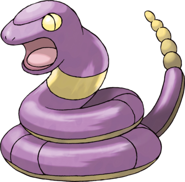

Abo est un Pokémon serpent au corps violet. Son ventre est complètement jaune, tout comme l'anneau qu'il possède autour du cou. Ses yeux sont aussi jaunes et il est muni d'une sonnette de la même couleur au bout de sa queue. Ce Pokémon est très peureux en temps normal, mais peut être agressif pendant les combats.